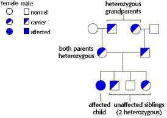

Human Genetics Problem Set
Problem 4 Tutorial: Inheritance pattern for Tay Sachs disease
|
A couple has a female child with Tay Sachs disease, and three unaffected children. Neither parent nor any of the four biological grandparents of the affected child has had this disease. The most likely genetic explanation is that Tay Sachs disease is inherited as a(n) ______________ disease.
|
Is this disease dominant or recessive?
| It must be recessive because both parents are normal, but one or both parents must have passed the disease allele to their daughter. Since one or both parents are heterozygous and are not affected by the Tay-Sachs allele, the disease must be recessive. |
| If it were X-linked and recessive, the affected child would have inherited the Tay-Sachs allele on the X chromosome from both parents. However the father, who has only a single X chromosome, is unaffected and must have the normal allele. Therefore the disease must be autosomal. |
|
A hypothetical pedigree for this family, showing heterozygous carriers in both the parental and grandparental generations, is shown in the diagram.
 |


University of Arizona
Revised: November 5, 1998
Contact the Development Team
http://biology.arizona.edu
All contents copyright © 1996-98. All rights reserved.